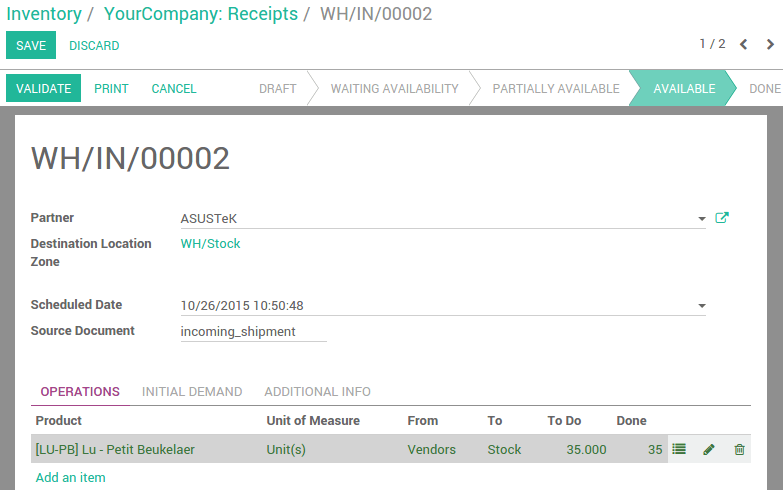

Lots Numbers can be encoded from incoming shipments, internal moves and outgoing deliveries:
- In the barcode interface, scan the products you want create a lot from
- If this product should be manage by lots, a window opens to help you scan the lots/serial numbers
- Scan a lot barcode, type one manually or leave empty to generate one automatically
- Click or scan Validate once you are done
What is the difference between Lots and Serial Numbers?
- Lot numbers are attributed to several identical products, so each time you scan a lot number, Odoo will add one on the product count.
- On the opposite, a serial number is unique, and represented by only one barcode, sticked on only one item. This means that Odoo won't accept scanning the same serial number more than once per operation.

Here, we configured Lu - Petit Beukelaer tracking by lots.
Scan a product from this incoming shipment, then scan the lot number of each product (you can also use the keyboard).

Click save/scan Validate and you are done.
